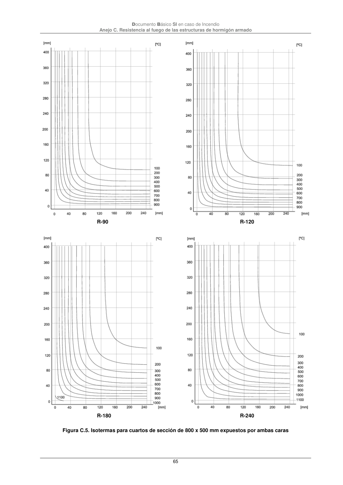

DB-SI Seguridad en caso de incendio · edición 2025-03-04 · capa oficial
Documento DB-SI-oficial · SHA-256 del PDF 0a2e78cd62471d9cc5cfe2efbc6aa39fdbad73c124aea7b039f9de96c141e105
Página física 65 de 92.
Copia fiel del PDF fuente · Fuente oficial
Ficha de la disposición en la fuente oficial
Formato: Texto de la página (Markdown)
Documento Básico SI en caso de Incendio Anejo C. Resistencia al fuego de las estructuras de hormigón armado 65 R-90 R-120 R-180 R-240 Figura C.5. Isotermas para cuartos de sección de 800 x 500 mm expuestos por ambas caras
